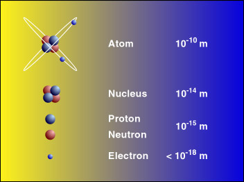
Before we study the Sun, let us learn a bit about atoms, because they are essential in understanding the energy production and the evolution of all stars. The typical size of an atom is about 10-10m. There are electrons orbiting around the atomic nucleus. Almost all the mass of an atom concentrates at the nucleus, which has a typical size of 10-14m. (Up to this point, an atom is similar to the solar system.) The nucleus consists of protons and neutrons. The number of protons, which are positively charged particles, determines the chemical properties of the atom, e.g. whether it will bond with other atoms to form molecules. The neutron, which is neutral, does not play an active role in chemical reactions. Protons and neutrons have about the same mass.
The simplest atom is the hydrogen atom, which has only one proton in
its nucleus, denoted by 1H. Other nuclei important in
astronomy include: 2H, which has one proton and one neutron
(the superscript 2 is the sum of the numbers of protons and neutrons);
3He (helium-3), two protons and one neutron;
and 4He (helium-4),
two protons and two neutrons (as shown in the above figure).
By mass, about 70% of the Sun is hydrogen. The rest is mostly
4He. We will see that hydrogen is the fuel of the nuclear
reaction in the core of the Sun, and helium is the product. But notice
that most of the helium is not produced by the Sun. It was already there
when the Sun was formed.
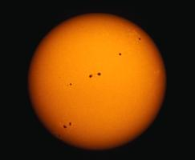 |
| Courtesy NOAO/NSF. |
The radius of the Sun is about 700,000 km, approximately 110 times the radius of the Earth. Its mass is about 2x1030kg, approximately 3.3x105 times the mass of the Earth. When we look at the Sun, we see the photosphere. It is a very thin layer (500km thick) in the "atmosphere" of the Sun. The density of the gas in the photosphere is just right that below it, the gas is very dense and light cannot directly get through. While above it, the gas is thin enough to allow us seeing through. Thus, the photosphere defines the "surface" of the Sun. Its temperature is about 6000K. (Kelvin (K) is the unit for the absolute temperature scale. One Kelvin is equal to one degree Celsius. However, the absolute temperature scale is shifted by 273. So, for example, 27°C is equal to 300K. Nothing can be cooler than 0K.)
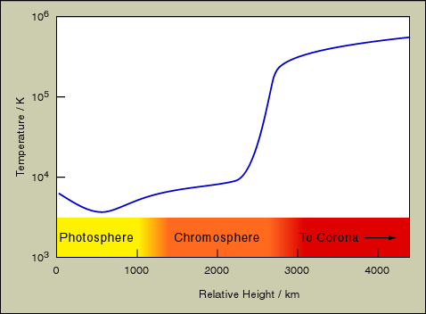
The gas below the photosphere has a higher temperature and so will rise up to the photosphere. After releasing its energy, the gas will become cooler and darker. It will sink again. This gives rise to the feature called granulation. Through telescopes, granulation looks like some bright regions surrounded by dark boundaries. Each granule is about 1/10 the size of the Earth and will last for about 20 minutes.
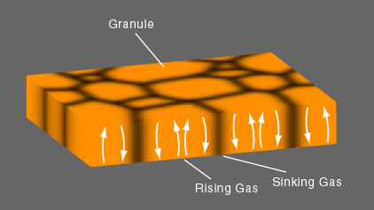
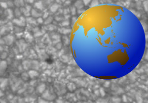 |
| Courtesy NASA. |
Above the photosphere is another layer of gas, about 2,000km thick, called the chromosphere. Its temperature is higher, with a typical value of 105K. It is much fainter than the photosphere, so we can see it usually only during a total solar eclipse. Chromosphere is not a smooth sphere. It is composed of small spikes called spicules. These are shown in the following photo.
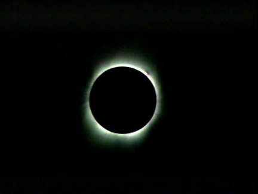 |
| Courtesy NASA. |
Corona is the outermost layer of the Sun. Similar to the chromosphere, usually it is only visible during total solar eclipse. Its density is very low and it can reach out to more than 10 solar radii. Its temperature is about 106K. We still cannot completely explain why the temperature of the chromosphere and corona can be higher than the photosphere.
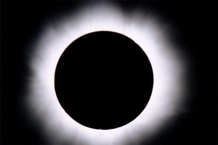 |
| Courtesy Hong Kong Space Museum, Photograph by Chee-kuen Yip. |
Corona is also the source region of the solar wind, which consists mainly of protons and electrons flying away from the Sun. At times of strong solar wind, we might see aurora on the Earth.
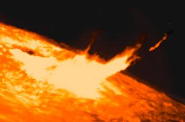 |
| Courtesy NOAO/NSF. |
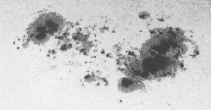 | |
| Copyright Carnegie Institution of Washington. |
Sunspots have limited life span, they form and dissolve within a few
days to about three weeks. The amount of sunspots on the photosphere
is periodic with a period of about 11 years. At the beginning of the
period, sunspots will appear at higher latitudes (i.e. far away
from the equator of the Sun). Then, the number of sunspots will
increase and they will appear at lower latitudes. If we plot the
positions of the sunspots against the time, we have the famous
"butterfly diagram."
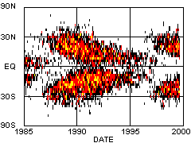 |
| Courtesy NASA. |
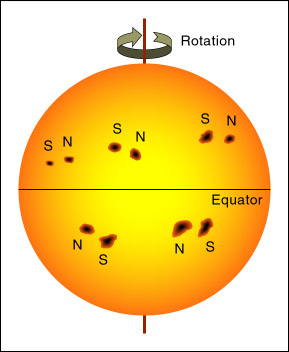
By spectrum analysis, we know that sunspots have strong magnetic field, about 1000 times stronger than the Sun's average. Also, sunspots usually appear in pairs. The two sunspots of a pair have different polarities, one would be a magnetic north and the other is a magnetic south. Thus, we believe that there are magnetic field lines joining the two sunspots of a pair. The strong magnetic field locks the gas of the photosphere in places and inhibits the hotter gas below to rise at the sunspots. As a result, the sunspots are cooler. A last note about sunspots, actually they affect the climate of the Earth. Studies show that during the last ice age, there were very few sunspots.
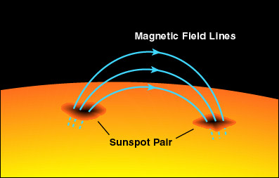
One could view the latest solar photos at SOHO.
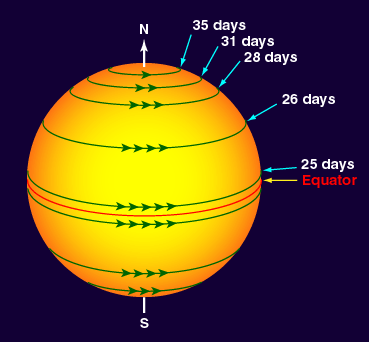
The interior of the Sun, where we cannot observe directly, can be divided into three parts: The core, where energy is produced; the radiative zone, where energy is transported by radiation; and the convective zone, where energy is transferred by convection. We will discuss them in turns.
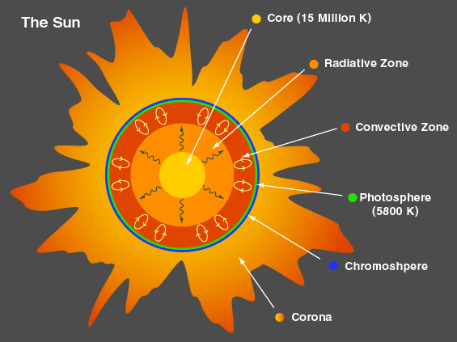
Energy Production: The energy source of the Sun has been investigated for a long time. Some typical energy sources like chemical energy, gravitational energy, etc. are proved to be impossible because the energy provided is not enough to last for very long. The energy of the Sun, in fact, comes from a kind of nuclear fusion, called p-p chain reaction, which consists of several steps. (Interested students should look up the textbooks for a discussion of the details of the p-p chain reaction.) The net effect is that four hydrogen nuclei fuse into a helium nucleus and produce a large amount of energy carried away by the photons in the form of gamma ray and others particles. (Note: Photon is a quantum of light. One kind of particles produced by the p-p chain is neutrino, which is massless and neutral. We will discuss more on neutrinos in Chapter 16.)
It requires extreme conditions to start the nuclear fusion. Those conditions still cannot be stably reproduced in laboratory on Earth, although a serious attempt is under way. First of all, high temperature is required to provide energy in overcoming the electric repulsion between protons ( 1H ). Moreover, high density is required to increase the chance of collision. Hence, the reactions can only take place in the core of the Sun, with temperature over ten million degrees ( 107K ).
Energy Transport: Photons in the form of gamma-rays are produced in the core of the Sun. How the photon goes to the surface of the Sun and leaves is roughly as follows.
In the inner region of the Sun, a photon can travel for only about 1 cm or less before absorbed by materials (mainly electrons and nuclei) and later on re-emitted in random directions as one or more photons. In this way, the number of photons increases and the energy of each resultant photon is decreased. This process is called radiative transport. It takes ten million years for the energy of the original photon to come to the outer part of the Sun in the form of thousands of low energy photons in the form of mainly visible light.
In the outer part of the Sun, the temperature is relatively low and the gas is opaque. Photons become more effectively absorbed. Radiative transport is no longer efficient enough to transfer the energy of the photons from the outer part of the Sun to the surface. Thus, convection becomes the major method in bringing the energy to the solar surface.
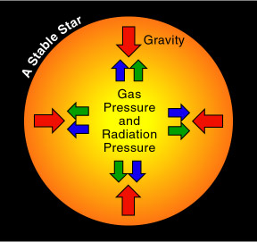
At the beginning of the formation of a star, the gravitational attraction will pull the gas together. At some point, the density and temperature at the center of the cloud of gas will be high enough to ignite the nuclear fusion. The energy produced by the fusion will create two kinds of outward pressure to act against the gravitational attraction. Because of these two balancing forces (the outward pressure and the inward gravitational attraction), the star is stable for a very long time (from millions to billions of years). The stability of our Sun is very important to the development of lives on Earth.The first kind of pressure refers to the gas pressure due to the materials inside the star. The higher the temperature and the more the material can lead to the increase of pressure. The second one is the pressure due to photons called radiation pressure. It increases with temperature.
No matter which kind of pressure, it is due to the generation of
energy in the core of the star, as a result, if no energy is
produced, a star will collapse.
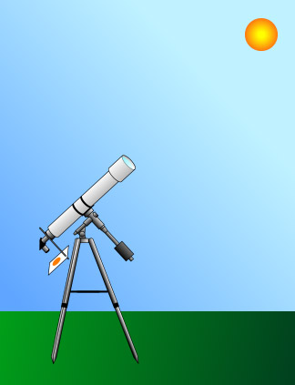
Beware: Never observe the Sun directly without an effective way to reduce the sunlight. You may be blind otherwise!There are two safe ways to observe the Sun. (1) Projection method: We project the solar image from a telescope to a screen and we observe the sunlight reflected from the screen. (2) Solar Filter: Alternatively, we put a specially designed solar filter in front of a telescope. Then we observe the filtered image through the telescope.
In contrast, the following methods are unsafe in one way or the
other: (1) directly looking at the Sun with naked eyes; (2) looking at the
Sun through a pair of sun glasses, exposed films, smoke-darkened
glass or small sun filter placed closed to the eyepiece; (3) looking
at the reflection of the Sun from a pool of water or dark ink. When
you are in doubt whether a method is safe, do not use it at all.